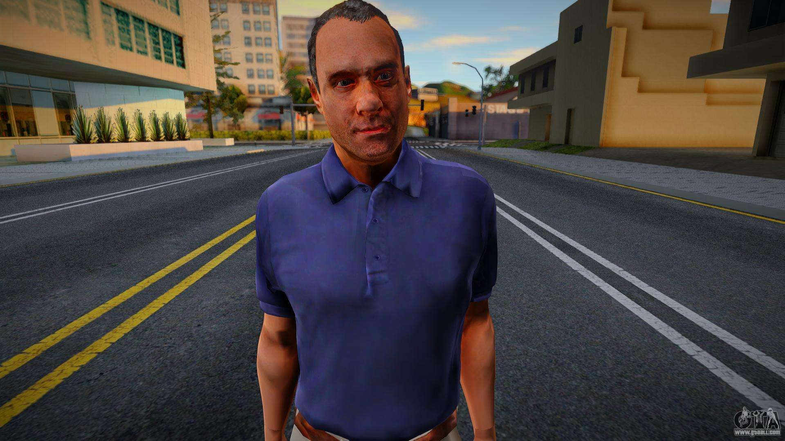
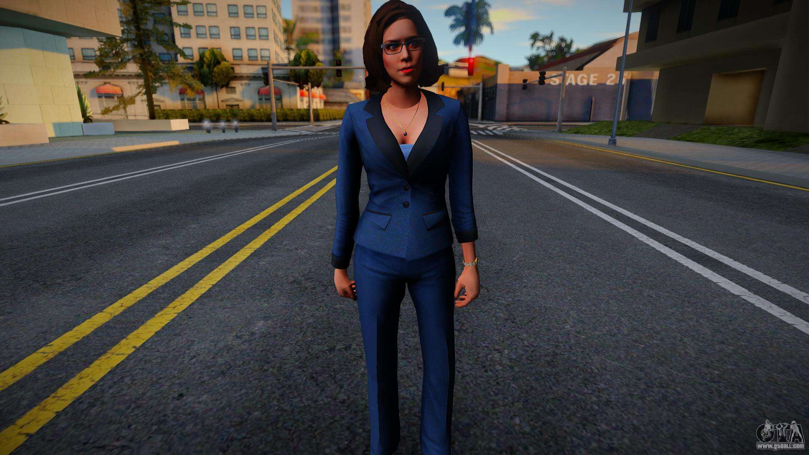
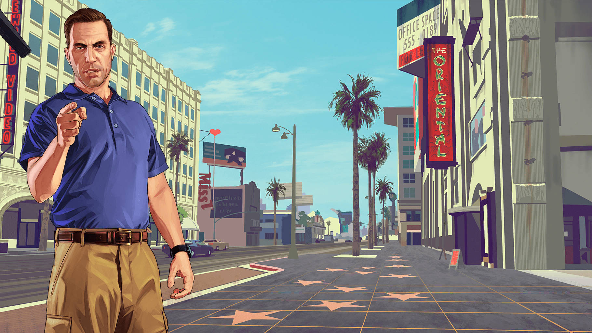
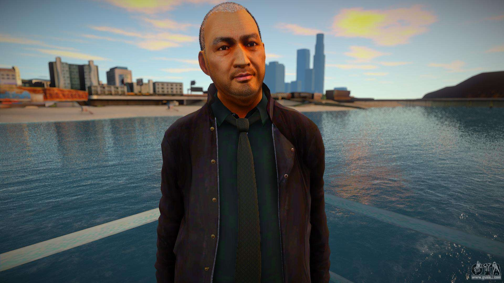
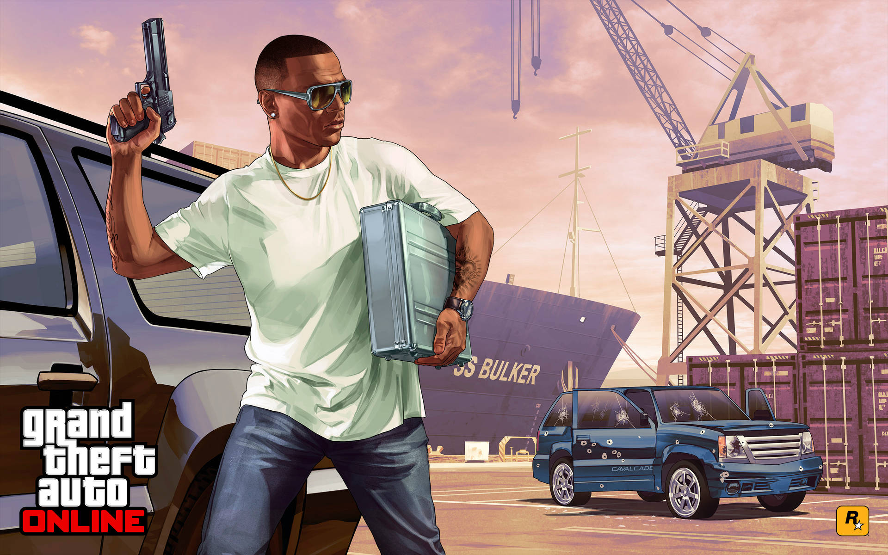

Devin Weston es un personaje de Grand Theft Auto V, que tiene un papel principal en el juego, siendo también el principal antagonista del juego. Es multimillonario y tiene varios negocios en sus manos, uno de los mas principales son las fuertes asociaciones y negocios con Merryweather. Steven Haines introducirá a los tres protagonistas (Michael, Trevor y Franklin) a Devin para que les hagan algunos trabajos.

Molly Schultz es un personaje de la saga Grand Theft Auto, que aparece como un personaje secundario y antagonista menor en Grand Theft Auto V. Ella es la abogada, Vice Presidente Senior y Consejera General para las empresas de Devin Weston.

Steven "Steve" Haines es un personaje de la saga Grand Theft Auto que aparece en Grand Theft Auto V como personaje central y a su vez, como el antagonista secundario. Es un policía federal corrupto que trabaja para el FIB y narrador del programa El lado oscuro del paraíso, el cual también puede ser visto en Grand Theft Auto Online. Siempre para acompañado con sus colegas del trabajo, Andreas Sánchez y Dave Norton. Es el mejor amigo del multimillonario Devin Weston. En la historia del juego, Steve le encomienda distintos trabajos a los protagonistas, sin importarle que estos arriesguen sus vidas para cumplirlo.

Wei Cheng es un personaje que aparece como uno de los 2 antagonistas secundarios secundarios de Grand Theft Auto V. Es un hombre de negocios chino, líder de la Triada de Los Santos. Cheng intenta hacer negocios con Trevor Philips, pero él arruina otros tratos que ha hecho, lo que arrastra a los amigos de Trevor: Michael De Santa y Franklin Clinton, a situaciones no muy agradables provocadas por Cheng.

Harold "Stretch" Joseph es un personaje Grand Theft Auto V, apareciendo como un personaje principal y un antagonista secundario en el Grand Theft Auto V. Stretch es un OG de los Families y un amigo de Lamar. El es doblado por el actor americano Hassan "Iniko" Johnson.
